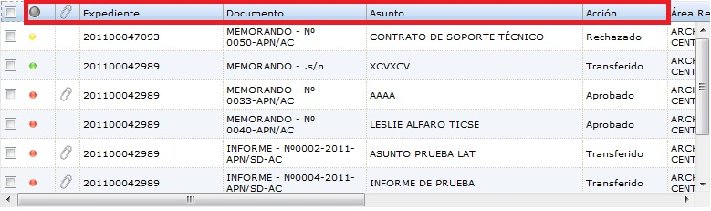
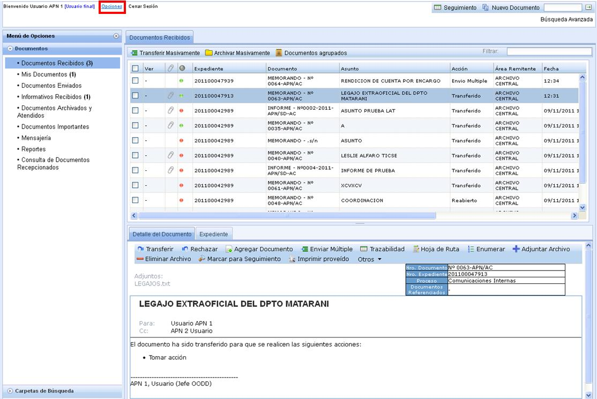
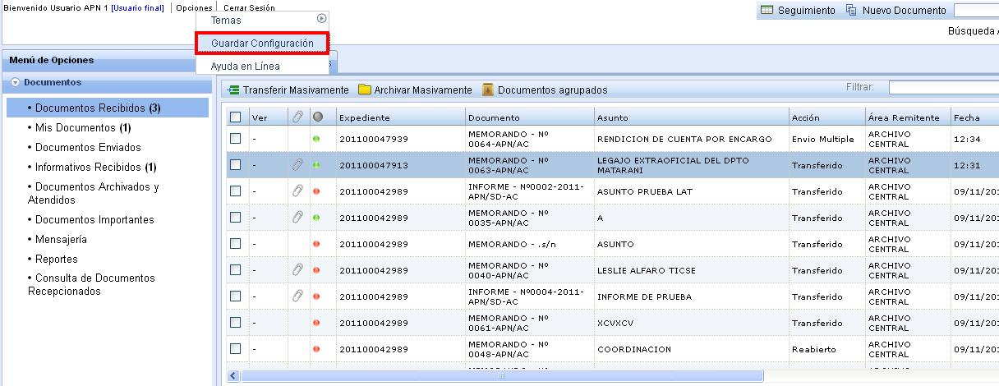

Guardar Configuración:
El usuario puede seleccionar que vista desea que le quede grabada en su Bandeja.
Situemos un ejemplo:
El usuario selecciona en la Bandeja de Documentos Recibidos, el siguiente orden: Semáforo, Adjunto,Expediente, Documento,Asunto, Accion. Para el usuario es prioridad que esté en ese orden la vista de su bandeja.

A continuación lo que debe de hacer el usuario para que su Bandeja de Documentos Recibidos quede con esa vista es lo siguiente:
Ir a la parte superior y seleccionar Opciones, como en la pantalla siguiente:

Luego seleccionar Guardar Configuración:

Created with the Personal Edition of HelpNDoc: Easily create Help documents